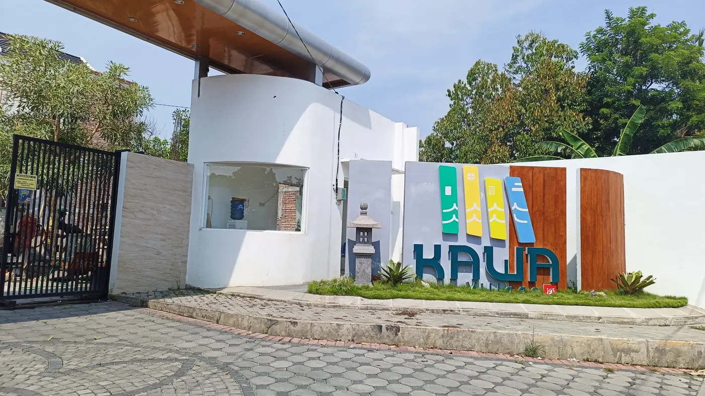
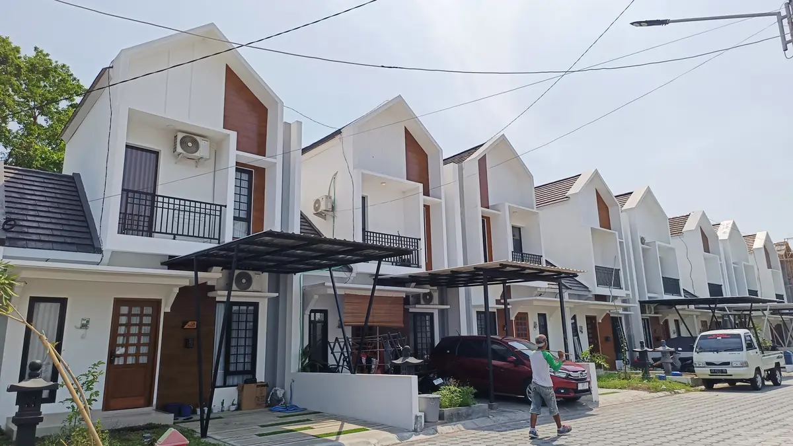
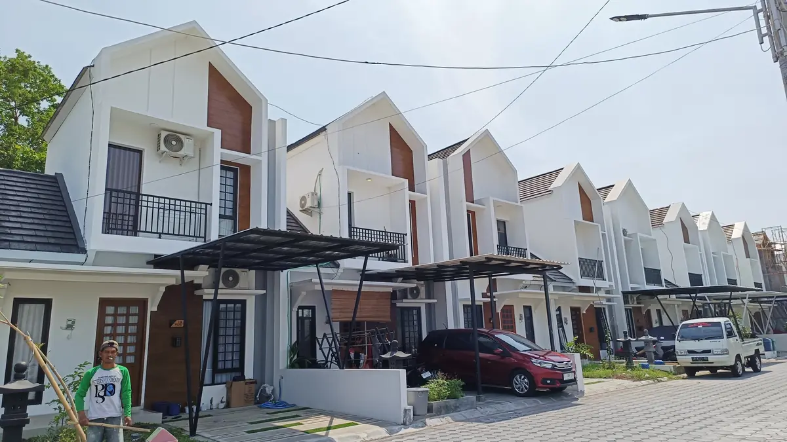
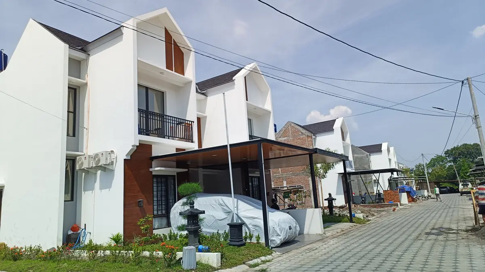
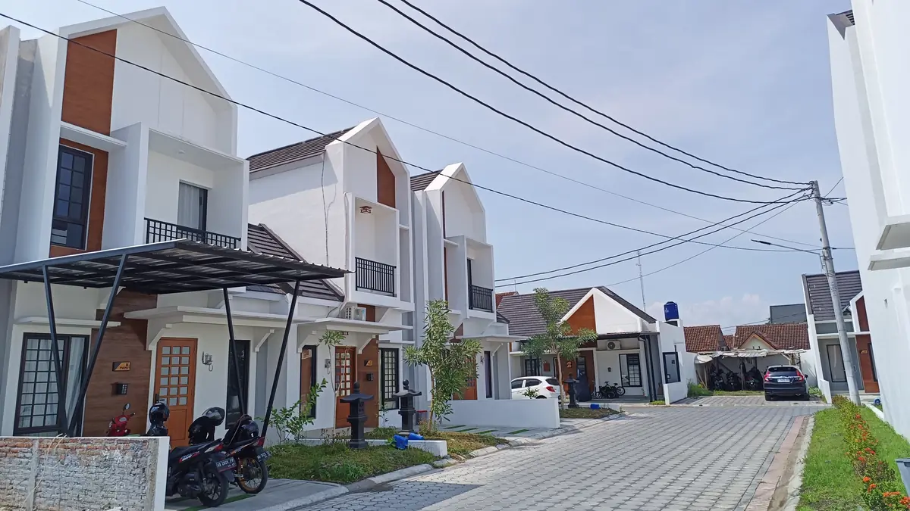
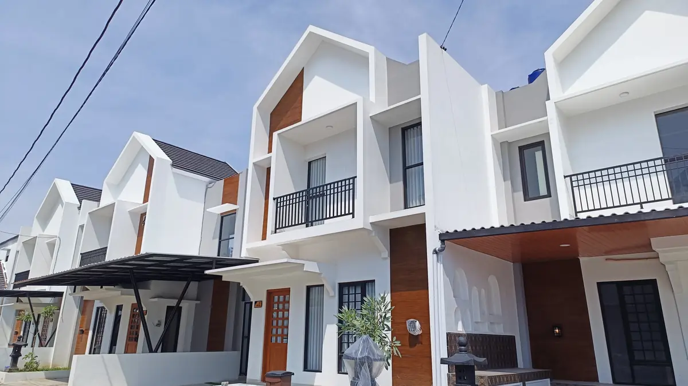
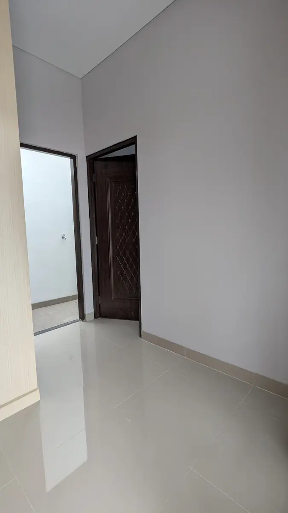
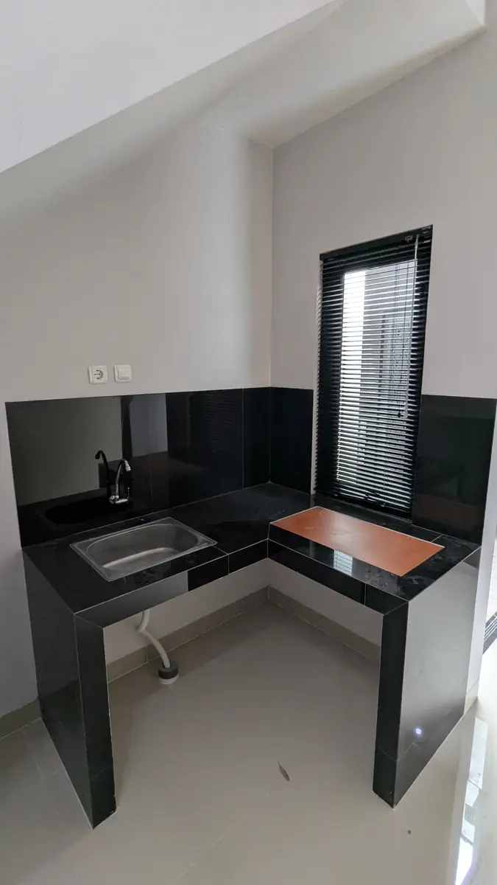
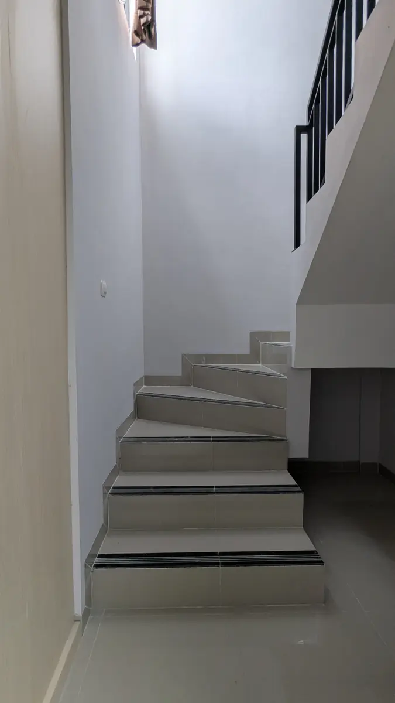
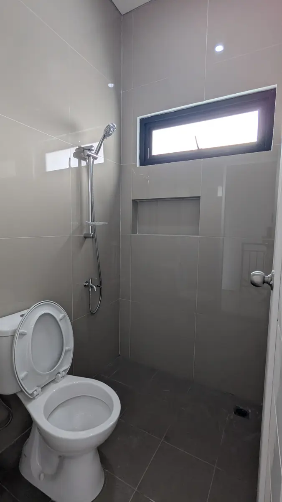

Kawa Village
71 rumah, 71 keluarga. Proyek ini sudah tuntas dan dihuni — halaman ini kami biarkan terbuka sebagai catatan.
Proyek yang dulu dijanjikan,
jadi atau tidak?
Kawa Village adalah salah satu perumahan JGS Group yang seluruh unitnya sudah diserahterimakan. Kami tetap menayangkan halaman ini karena calon pembeli sering ingin tahu satu hal itu. Di bawah ini jawabannya — foto hari serah terima dari rumah-rumah yang kini dihuni.
Dibangun sejak 2021 di Joho, Jambidan, Banguntapan, Bantul, Kawa Village terdiri dari 71 unit dalam empat tipe — Yama, Mizu, Hana, dan Kumo. Serah terima terakhirnya tuntas pada 2026.
Bukan gambar rencana.
Ini yang berdiri.
Foto kawasan Kawa Village, diambil November 2024 — saat sebagian rumah sudah dihuni dan sebagian lagi masih dalam penyelesaian menjelang serah terima terakhir.






Yama, Mizu,
Hana, dan Kumo.
Keempatnya sudah habis terjual. Foto di bawah adalah unit terbangun, bukan gambar tiga dimensi.
Apa adanya,
sebelum ditempati.
Foto ini diambil saat unit masih kosong — tanpa penataan dan tanpa perabot tambahan, supaya yang terlihat memang bangunannya.




Rumah-rumahnya,
dan pemiliknya.


{kind=link}
{kind=link}
{kind=link}
{kind=link}
{kind=link}
{kind=link}
{kind=link}
{kind=link}
{kind=link}
{kind=link}
{kind=link}
{kind=link}
{kind=link}
{kind=link}
Kawa Village sudah habis.
Yang masih tersedia sekarang: Kawa Living di Sedayu, dengan tipe dan kawasan yang sejalan.
Foto dipublikasikan atas izin pemilik rumah. Keberatan foto tampil di sini? Hubungi admin kami di 0889-0292-9571.